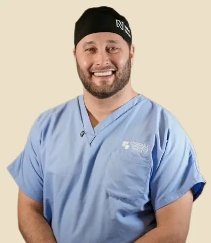
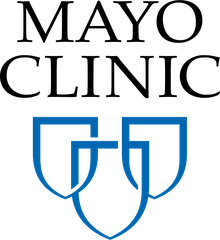
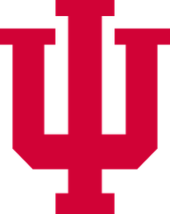
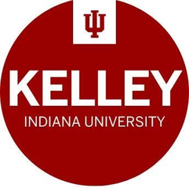
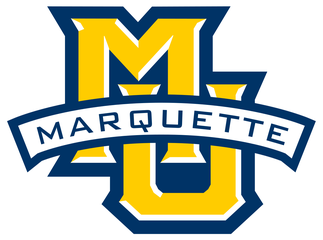

Simple Implant Placement
Single-tooth confidence: site assessment, flap or flapless, torque, and the decisions that keep straightforward cases straightforward.
Chairside Mentorship — Your Office, Your Patients
In your practice, on your patients — earn and learn.
Dr. Castedo has placed and restored 30+ full cases per month, including pterygoids and other remote anchorage implants, using GuidedSMILE in both digital and analog protocols. He has trained with some of the best, and he brings that knowledge into your practice: simple to challenging methods, team efficiency, and the procedures your schedule is waiting on.

The Curriculum
Every topic below is taught live, on your patients, with your equipment or equipment he introduces, and with your team. Choose up to two per day in the booking form, and Dr. Castedo builds the schedule around your case list.
Single-tooth confidence: site assessment, flap or flapless, torque, and the decisions that keep straightforward cases straightforward.
Terminal dentition to a fixed prosthesis. Sequencing, bone reduction, implant distribution, and the prosthetic endgame planned from day one.
Anchorage in the posterior maxilla without a graft. Trajectory, tuberosity anatomy, tactile landmarks, and how to avoid the classic misses.
Zygoma as a rescue and as a primary plan. Case selection, extra-sinus versus intra-sinus paths, remote anchorage kits, and same-day loading.
Lateral window and crestal approaches, membrane management, graft choice, and the judgment call on placing simultaneously or staging.
Bring your CBCTs. Work through real charts together and leave with a plan, a fee, and a conversation you can have with the patient tomorrow.
Photogrammetry and Grammetry capture, scan bodies, verification, and the file path from surgery to a passive final prosthesis.
Conventional CHROME GuidedSMILE surgery start to finish, including the prosthetic conversion that sends the patient home in teeth.
Bone-preserving position, emergence, and tissue management for restorations that come out of the tissue like natural teeth.
Locator and bar-Locator cases, digitally designed and delivered, with the maintenance conversation your hygiene team needs.
The patient conversation. How to present full arch, answer the money question, and close ethically without the hard sell.
Choreography, instrumentation, and assistant roles that compress the surgery without cutting corners on the result.
Failing arches, fractured prostheses, and implants in the wrong place. How to assess, what to salvage, and when to start over.
“The point is not to watch a great case in a course. The point is that you perform the next one hundred cases with trained expertise.”
William D. Castedo, DDS — Lead Surgeon, Affordable Dentures & Implants, Jonesboro, AR
Background
Dr. Castedo came to dentistry through civil engineering and computational science, and it shows in how he works: everything measured, everything referenced, nothing improvised at the chair. He trained in advanced prosthodontics at Mayo Clinic under Thomas Salinas, DDS, earned his DDS at the Indiana University School of Dentistry, and added an MBA and a Master of Science in Finance from the Kelley School of Business.
Today he is lead surgeon and restorative dentist at Affordable Dentures & Implants in Jonesboro, Arkansas, where he runs a fully digital practice and serves as a Key Opinion Leader for Nobel Biocare and GuidedSMILE. He is published in prosthodontic case literature, presented zygomatic rehabilitation work at the American College of Prosthodontists, and coordinated the Oxford–AstraZeneca vaccine trial site that published in the New England Journal of Medicine.




What He Brings
Book Dr. Castedo
Choose how many consecutive days you want. Each additional day is discounted. Pick up to two topics per day, add your details, and the request goes straight to Dr. Castedo.
Contact